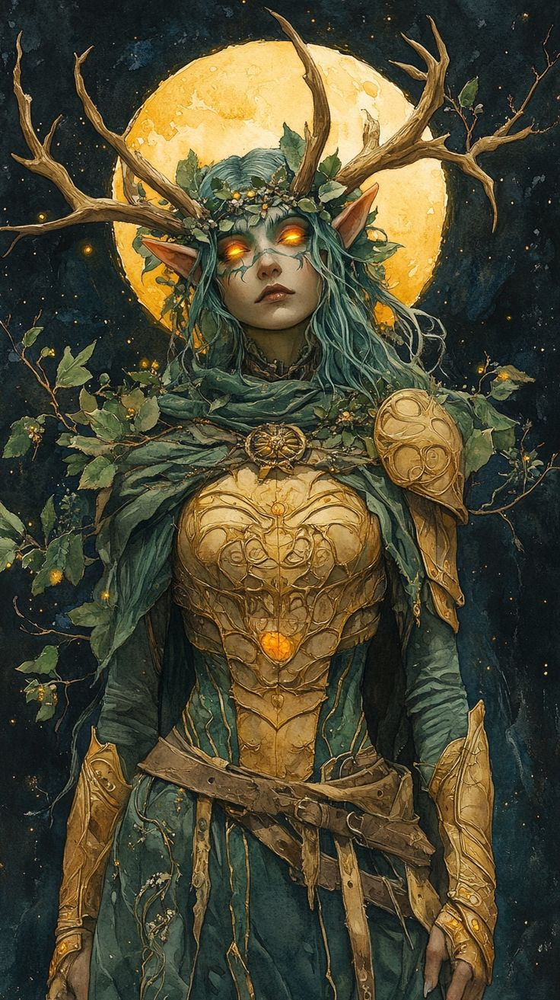

História / Mitos
• Conhecida por pregar peças nos viajantes perdidos
• Guia quem se perde para longe do perigo
Poderes
• Metamorfose
Transforma-se em fera ou manifesta partes animais (garras, guelras) mantendo a forma humana
• Crescimento Selvagem
Conjura Crescimento de Espinhos ou Emaranhar. Aliados ignoram o terreno difícil criado
• Comando de Feras
Feras não atacam o devoto. Pode conjurar Dominar Fera ou convocar animais para lutar
Conhecido por
• Proteger quem se perde
• Pregar peças em viajantes
Exige
• Respeito ao natural
• Manter o equilíbrio
• Aceitar força e fragilidade
Não tolera
• Dominação absoluta da natureza
• Devastação sem propósito
• Seres supérfulos
Classes
• Druida
• Bárbaro
• Ranger
Cultuado por
• Elfos da floresta